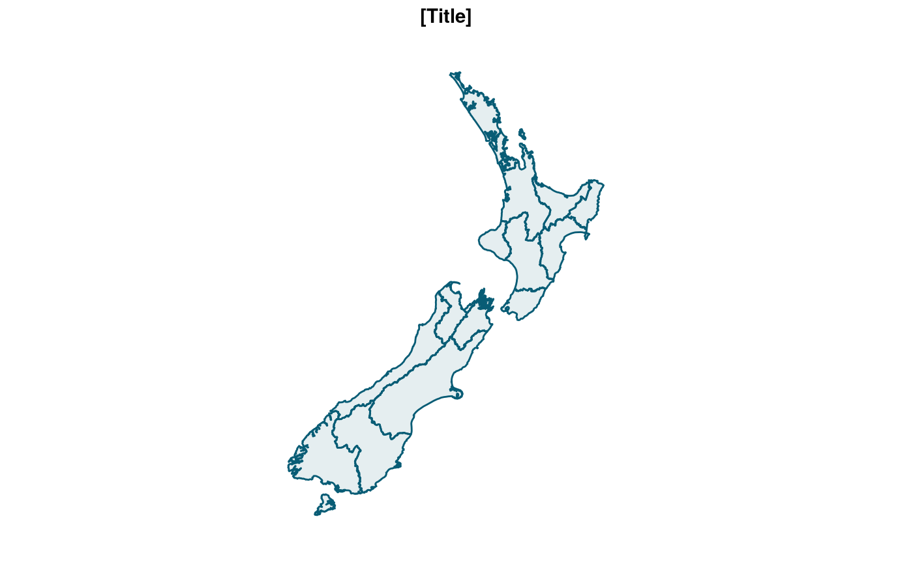
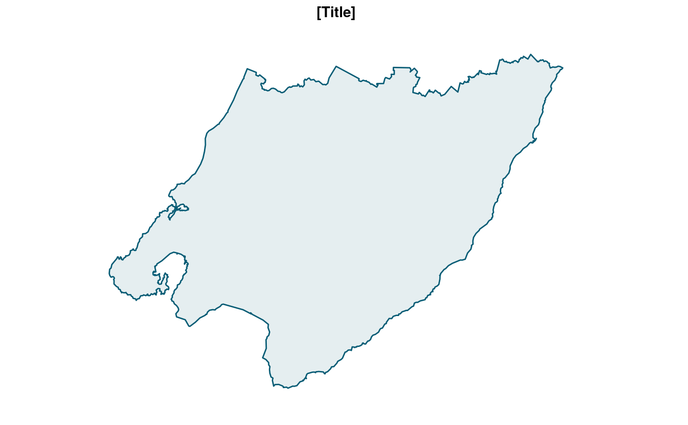

Simplified New Zealand regional boundaries, excluding the Chatham Islands.
nz_region
An sf object.
nz_region#> Simple feature collection with 16 features and 3 fields #> geometry type: MULTIPOLYGON #> dimension: XY #> bbox: xmin: 166.4261 ymin: -47.28981 xmax: 178.5504 ymax: -34.39263 #> CRS: EPSG:4326 #> # A tibble: 16 x 4 #> region_code region region_macron geometry #> <fct> <chr> <chr> <MULTIPOLYGON [°]> #> 1 01 Northland Northland (((173.2475 -35.34802, 173.2494 -35.35… #> 2 02 Auckland Auckland (((175.44 -36.26242, 175.4375 -36.2585… #> 3 03 Waikato Waikato (((174.7847 -38.13349, 174.7865 -38.13… #> 4 04 Bay of Pl… Bay of Plenty (((176.1715 -37.68738, 176.1707 -37.68… #> 5 05 Gisborne Gisborne (((177.876 -38.0767, 177.9723 -37.8450… #> 6 06 Hawke's B… Hawke's Bay (((177.9018 -39.07296, 177.908 -39.075… #> 7 07 Taranaki Taranaki (((174.2067 -39.59022, 174.2015 -39.58… #> 8 08 Manawatu-… Manawatū-Whan… (((175.5606 -38.49023, 175.5655 -38.49… #> 9 09 Wellington Wellington (((174.8099 -41.34305, 174.8109 -41.34… #> 10 12 West Coast West Coast (((170.3303 -43.09979, 170.3268 -43.10… #> 11 13 Canterbury Canterbury (((172.6917 -42.10662, 172.7017 -42.10… #> 12 14 Otago Otago (((169.7051 -46.47425, 169.7035 -46.47… #> 13 15 Southland Southland (((167.7202 -47.04975, 167.7135 -47.04… #> 14 16 Tasman Tasman (((172.4941 -41.04557, 172.4961 -41.04… #> 15 17 Nelson Nelson (((173.3167 -41.24106, 173.3154 -41.23… #> 16 18 Marlborou… Marlborough (((173.3044 -41.507, 173.2889 -41.4932…ggplot_sf(nz_region)